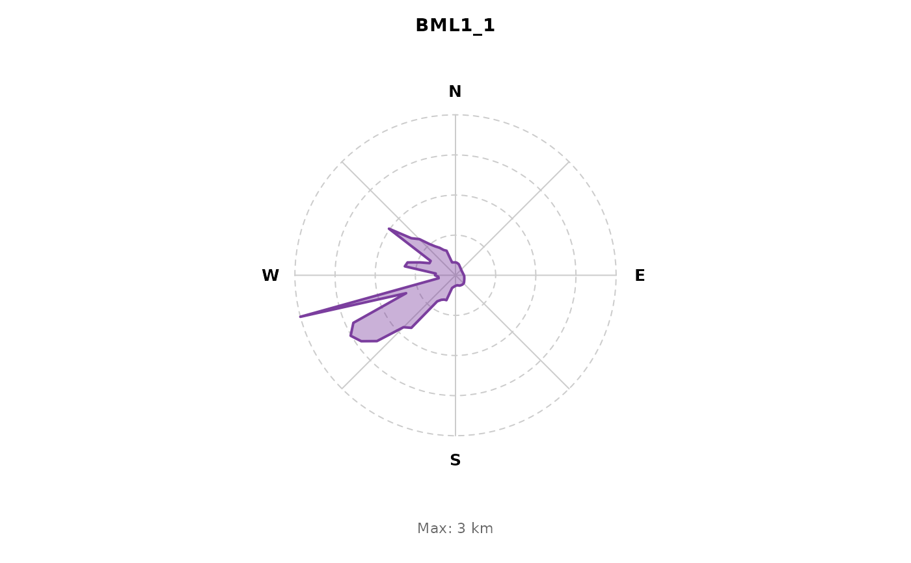

Create a rose diagram showing directional fetch for a single site.
Arguments
- fetch_data
Results from
fetch_calculate- site
Site name (character) or row index (integer) to plot
- title
Optional plot title (defaults to site name)
Examples
# Compute fetch offline against the bundled Blue Mountain Lake polygon.
data(example_lake)
sites_df <- load_sites(system.file("extdata", "sample_sites.csv",
package = "lakefetch"))
#> Loading data from: /home/runner/work/_temp/Library/lakefetch/extdata/sample_sites.csv
#> Loaded 2 rows with columns: Site, latitude, longitude, lake.name
#> Using columns: Latitude = latitude, Longitude = longitude
#> Preserved lake name column: lake.name
#> Final valid samples: 2
#> Detected location from column 'lake.name': Blue Mountain Lake
sites_sf <- sf::st_transform(
sf::st_as_sf(sites_df,
coords = c("longitude", "latitude"), crs = 4326,
remove = FALSE),
sf::st_crs(example_lake)
)
lake_data <- list(all_lakes = example_lake,
sites = sites_sf,
utm_epsg = sf::st_crs(example_lake)$epsg)
results <- fetch_calculate(sites_df, lake_data, add_context = FALSE)
#> Effective fetch method: top3
#> Using default depth: 10 m
#> Assigning sites to lakes...
#> Checking direct intersections...
#> 2 sites matched directly
#> Site assignment summary:
#> Matched: 2/2
#> Sites per lake:
#> Blue Mountain Lake: 2 sites
#> Calculating fetch for multiple lakes...
#> Buffering sites 10m inward
#> Angle resolution: 5 degrees
#> Processing 1 lake(s)...
#> Using sequential processing
#> Processing 2 samples in lake: Blue Mountain Lake
#> Fetch calculation complete.
plot_fetch_rose(results, 1)
